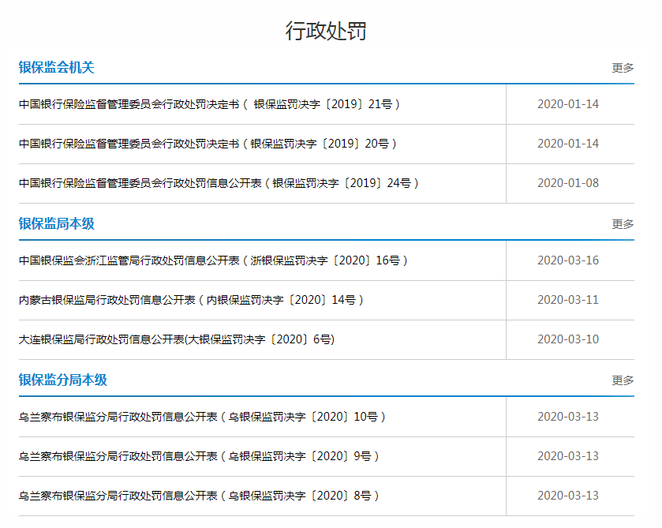
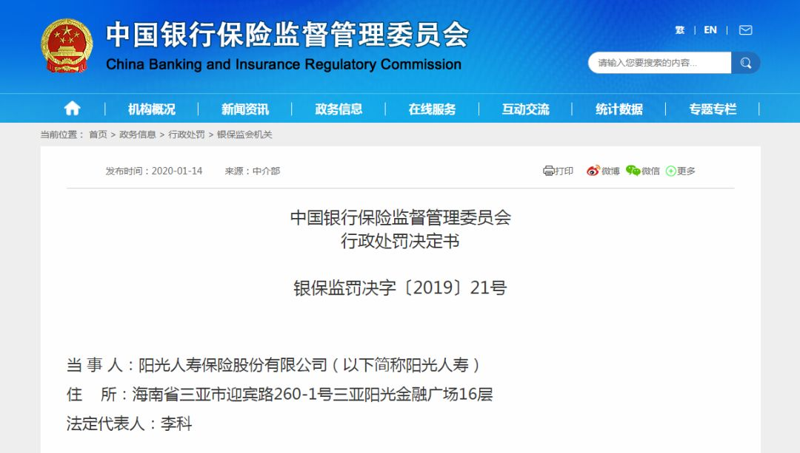

新冠疫情四重冲击，全球化要倒退？
原文链接 备份链接 全球疫情的进一步扩散，将对全球经济带来较大的冲击，而由于国际局势已经与全球金融危机爆发时大为不同，全球合作的前景不容乐观，新冠疫情有可能随之会给全球经济带来第四次冲击波 文 | 何帆 朱鹤 许佩玉 黄婉菁 新冠病毒已经 …

新冠肺炎疫情下，主流险企陷入保费下滑危机

受疫情影响，3·15晚会推迟，但消费者维权的声音不会延期，保险类产品依然是投诉维权的热门话题，据中消协统计，2019年涉及汽车保险类投诉共计594件，捆绑销售车险和诱导消费者保险贷款成为投诉的热点，今年3·15前后，围绕保险产品的声讨再次掀起高潮。
值得注意的是，今年保险业的日子并不好过，中国平安、中国人保、中国人寿、中国太保以及新华保险五大上市险企均于近期公布今年1月、2月保费收入，前两个月保费总收入6719.74亿元，同比上涨4.3%，而2月份的保费总收入1435.39亿元，环比大幅下降72.8%。
消费者保险维权涛声依旧，新冠肺炎疫情下的保险市场市场又将有何种预期？
开门红危机
开门红是保险业传统销售旺季，大多数保险公司都将开门红作为全年的工作重点，为完成保费收入，集中推出优惠的保险产品。开门红的第一季度保费收入尤其是1月和 2月份的保费，往往占据了保险公司全年保费的很大比例。
但是今年的保险热销季却全面遇冷，目前公布的数据显示，今年前两个月，五大上市险企，中国人寿保费收入2280亿元，同比增长20.5%；中国太保保费收入909.23亿元，同比上涨1.6%；新华保险保费收入395.6亿元，同比上涨44.2%；中国人保保费收入1241.61亿元，同比下降5.13%；中国平安保费收入1893.3亿元，同比下降8.6%。五家上市险企三家保费上涨，两家出现下滑。
2月份，五大上市险企的保费收入环比则出现剧烈下降。
中国人寿保费收入为345亿元，环比下降82.2%；中国太保保费收入为213.06亿元，环比下降69.4%；新华保险保费收入88.55亿元，环比下降71.2%；中国人保保费收入323.04亿元，环比下降64.8%；中国平安保费收入465.74亿元，环比下降67.4%。
 上市险企1、2月保费收入
上市险企1、2月保费收入
北京某大型保险公司向中国新闻周刊称，今年保险业的开门红行情缺席主要受新冠疫情的影响，春节期间疫情暴发，险企自身面临复工延迟，银保等产品销售渠道受阻，而传统的汽车等市场低迷，拖累财险保费收入大幅下降。
业界分析称，险企今年2月保费大幅下降在意料之中，2月分是国内疫情的暴发期，举国闭门战疫，在家隔离、线上办公等使得险企业务受到最大冲击，叠加2月份的春节假期延长，险企保费收入剧烈下滑并不意外。
来自券商分析师的观点认为，中长期来看，新冠肺炎疫情提高了消费者对疾病的自我防范意识和对健康风险的保障意识，有助于激发健康保险的配置需求，疫情结束后，保险需求必将反弹，预计将推动保险行业迅速发展。
按照正常逻辑，每次重大的疫情、灾害，必会大幅提升消费者的保险意识，保险业营收应声大幅上涨才是市场预期，但此次新冠肺炎疫情下，主流险企却同步陷入保费下滑危机。
中国新闻周刊同时发现，保险行业开门红期间的销售遇冷并不是今年首度出现。
2018年，受原中国保监会加强保险产品及销售监管影响，尤其是134号文加强快返型保险产品监管，万能、两全等保险产品被叫停，136号文要求针对保险误导销售严查，此前连续三年保费高增长的保险行业开门红开始遇冷，第一季度行业保费收入出现负增长。2018年整年，保险业整体的原保险保费收入仅同比增长3.92%，创下7年来新低。
2019年，寿险市场率先暴冷，当年1月份，中国平安、中国太保、中国太平寿险保费仅分别同比增长5.22%、2.89%、9.58%，结束连续三年两位数增速，度过了缺少喜庆红色的开门季。

上市险企寿险业务趋势
2020年，中国保险业更是遭遇前所未有的压力。
分析指出，承保端来看，传统线下销售渠道受阻，代理人脱落、险企增员难，直接影响新单增长，企业延期复工等致使银代、团险渠道均受到不同程度影响；投资端上，美联储已连续两次降息或引发全球进入低利率环境，中国央行再度降息预期增强，今年全球降息范围和力度进一步加大，资产荒与信用风险上升，对保险资金投资带来压力。
有消息称，目前部分保险公司到期资产收益率已经出现倒挂现象，今年新投资资产收益率不足5％，明显低于去年收益率水平。
今年前两个月的数据也显示，寿险银保市场新单规模保费同比下降超40%，其中2月份单月新单规模保费同比下降达69%，新单规模保费降至7年来低点；财险市场上，中国人保、中国太保、中国平安2月单月保费均录得负增长，分别同比分别为-6.8%、-10.8%、-7.9%。
开门红遇冷、新单负增长、财险业务萎缩等问题并存的保险业后市将作何表现？
不过也有业界声音称，保险业通过调整资产配置，增加保险业经营韧性等途径，可以在很大程度上抵挡不利影响。当前保险股股价已经体现了多种不利因素的影响，对于投资者来说，正是进行长期配置的好机会。疫情结束之后，保险业有望否极泰来，迎来收入和股价的反弹。
规避保险乱象
与保费销售遇冷不一致的是，保险业的违规事项却呈抬头之势。
据中国新闻周刊初步统计，银保监会官网今年1月份，针对保险业发布了2张行政处罚决定书，罚款金额75万元，地方监管部门发布了248张，罚款金额4708.6万元。
仅在1月份，全国保险监管部门共计发布250张罚单，同比增长320.5%；罚款金额共计4783.6万元，同比增长304.2%。45家保险中介机共计被罚566.5万元（不含个人处罚）；33家保险公司，共计被罚3426万元（不含个人处罚），同比增加15家，其中，中国人保财险、天安财险和中国平安产险三家公司以675万元、541万元和260万元的处罚金额排在前三位。

银保监会近期公布的处罚决定
初步统计显示，今年前两个月，中国保险监管部门共开出289张保险业罚单，2019年前两个月的罚单为167张，罚款金额共2609万元。从罚单情况来看，财险依然是保险公司违规最多的领域，1月被处罚的33家公司中，15家为财险公司，2月被处罚的13家保险公司中，8家为财险公司。
违规事项上包括，弄虚作假数据不实问题、虚假宣传误导消费者问题和虚构保险中介业务套取费用问题、中介机构违规经营问题、内部风险管理漏洞问题、违规返利揽客等保险违规事项均有涉及。
如中国人保财险、天安财险、大地财险 “利用保险中介公司虚构保险中介业务套取费用、编制并提供虚假报表资料”被罚。华泰人寿随州中心支公司工作人员在微信朋友圈发布“饥饿”营销宣传，存在以不真实信息欺骗投保人被罚。阳光人寿向监管部门报送的报表未如实填列“期末营销员人数”，内部控制不严格，风险处置制度机制不健全被罚。建设银行南昌分行 “贷款强制搭售保险产品”被罚。

阳光寿险被处罚
在经历2017年、2018年两个“严监管”之年后，2019年，监管函、罚单数量、罚款金额都在同步缩减，侧面说明保险业经过整顿乱象受到遏制，但在2020年违规事项再次抬头。
分析人士称，保险业严监管不会放松，罚单增加反而意味着“严监管”将成为常态化。
中国太保专业人士称，疫情加速了保险行业“开门红”的转型升级，这既是保险行业健康发展的历史机遇，也让消费者未来能够获得更多实实在在的保险保障产品。疫情之下，险企普遍意识到数字化转型的重要性与紧迫性，且高效的线上渠道将是未来竞争的关键之一。
但目前互联网保险监管仍处盲区，相关法规还在不断健全，2019年10月10日，银保监会发布《中国银保监会办公厅关于开展银行保险机构侵害消费者权益乱象整治工作的通知》，直指互联网保险侵害消费者权益的系列乱象。
互联网保险销售对保险产品关键信息说明不充分、不明确，如宣传时故意使用误导性词语组合，混淆和模糊保险责任；互联网业务中重要信息披露、风险提示、客户告知不够标准、清晰，如销售页面所载条款或保险责任不全，重要内容未采取字体、颜色等特别提示；将投保过程嵌入其他诸如网络借款等业务流程，而对保额、保费、保险责任、保险产品的承保机构等投保信息告知不足。
在网络销售中限制消费者的自由选择权，如与第三方网络借款平台合作，强制消费者在借款过程中投保意外险、保证保险等，若不投保则无法办理借款。互联网业务中的保险公司、中介机构、第三方网络平台的角色定位边界不清晰、第三方网络平台经营主体与披露合作的第三方网络平台主体不一致，存在违规经营的风险。
线上理赔管理不到位，消费者线上申请保险理赔后无人回复且等待时间长，线上线下理赔服务衔接不到位。通过第三方网络平台销售保险，发生争议纠纷时，销售平台和保险公司相互推诿、处理时效冗长。保险公司和保险中介机构未完整保存互联网保险销售过程中投保人投保信息、操作轨迹、操作时间，以及保险公司接收投保申请时间等内容。
2019年12月，由银保监会牵头起草的《互联网保险业务监管办法(征求意见稿)》正在业内征求意见，相信新互联网保险监管体系将快速出台，互联网保险监管将纳入严监管轨道，保险公司的转型线上同样面临严监管。
疫情风暴下，与你我生活紧密相关、蓬勃发展的保险行业，能否抛却乱象丛生，实现业绩否极泰来？
值班编辑：石若萧
推荐阅读
▼


国际公共卫生专家：美国疫情防控迎来转折点，未来几周病例会迅速上升


原文链接 备份链接 全球疫情的进一步扩散，将对全球经济带来较大的冲击，而由于国际局势已经与全球金融危机爆发时大为不同，全球合作的前景不容乐观，新冠疫情有可能随之会给全球经济带来第四次冲击波 文 | 何帆 朱鹤 许佩玉 黄婉菁 新冠病毒已经 …
原文链接 备份链接 利用中国的疫情防控经验，帮助其他疫情受灾国度过难关，同时强化未来的合作机会。在这个时候，帮助其他国家其实也等于帮助中国自己 巴基斯坦新政府上台以来，中巴经济走廊的发展前景开始处于一个较为不确定的状态。图/IC 文 | …
原文链接 备份链接 在可预见的未来，中国的游戏市场将一直扮演这个巨大而隐秘的变量。 在过去的两个月里，《健身环大冒险》已经成为最完美的理财产品了。 如果你在去年刚发售时原价购入，现在可以用接近三倍的价格再卖给别人。这还是近几天价格回落 …
原文链接 备份链接 随着多国新冠肺炎感染者数量持续攀升，全球战疫进入关键时刻，“全球一盘棋、各国共进退”日益成为国际共识。 “积极开展抗疫国际合作”“维护地区和全球公共卫生安全”，这是一个多月来，中国最高领导人习近平在带领中国全力战疫 …
原文链接 备份链接 文 |《巴伦周刊》中国撰稿人 郭力群 编辑 | 康娟 新冠肺炎疫情爆发后，中国部分经济活动一度陷入停滞，这一点从近期公布的经济数据中就能看出。中国海关总署3月7日发布的数据显示，今年前两个月，中国进出口总值5919.9 …